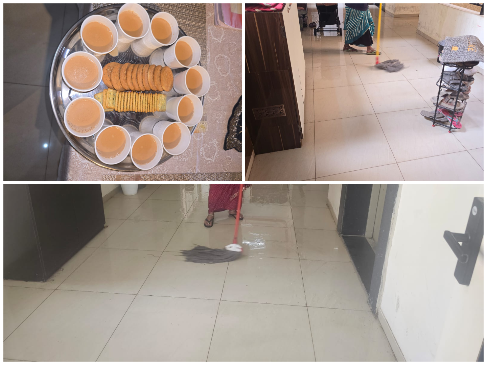

Diwali Cleaning Drive Begins at Life Republic R3

Ten housekeeping staff members are working across five buildings to give common areas a festive-season refresh.
The festive season preparations are underway at Life Republic R3, with the housekeeping team beginning a special cleaning drive ahead of Diwali. Ten housekeeping staff members have been deployed to clean the floors across all five buildings, aiming to make the common areas cleaner and more welcoming for residents.
What Does the Cleaning Drive Include?
The ongoing cleaning work includes removing spider webs, thoroughly washing floors with water, and cleaning them using a floor wiper and mop. The housekeeping team is reportedly spending approximately 30–45 minutes on each floor to complete the cleaning process.
According to unconfirmed information, the drive is expected to be completed within this week. The current plan is to finish cleaning Building E by Sunday, 25 October 2026.
Residents Appreciate the Efforts
The initiative has received a positive response from residents, many of whom are pleased to see the common areas receiving additional attention ahead of the festival. In a thoughtful gesture, some residents have also offered tea and biscuits to the housekeeping staff, acknowledging their efforts to keep the community clean during the festive season.
A Suggestion to Keep Floors Cleaner for Longer
While appreciating the cleaning initiative, one resident raised a practical question about the sequence of cleaning activities. According to the resident, floor wiping with a floor wiper should ideally be carried out towards the end of the process, as the floors remain wet for some time. Movement through the area immediately after cleaning may bring back dirt and footprints, reducing the effectiveness of the effort.
The resident also suggested installing floor mats on the ground floor (0) and basement level (-1). These mats could help trap dust and dirt brought in from outside, potentially helping keep the floors cleaner for longer after the cleaning drive.
A Cleaner Community for the Festive Season
The Diwali cleaning drive is a welcome step towards maintaining cleaner common areas at Life Republic R3. With residents appreciating the housekeeping team's efforts and offering suggestions for improvement, the initiative also presents an opportunity to explore simple measures that could help maintain cleanliness beyond the festive season.
As the cleaning work continues across the buildings, residents will be looking forward to seeing the drive completed and the common areas looking their best for Diwali.